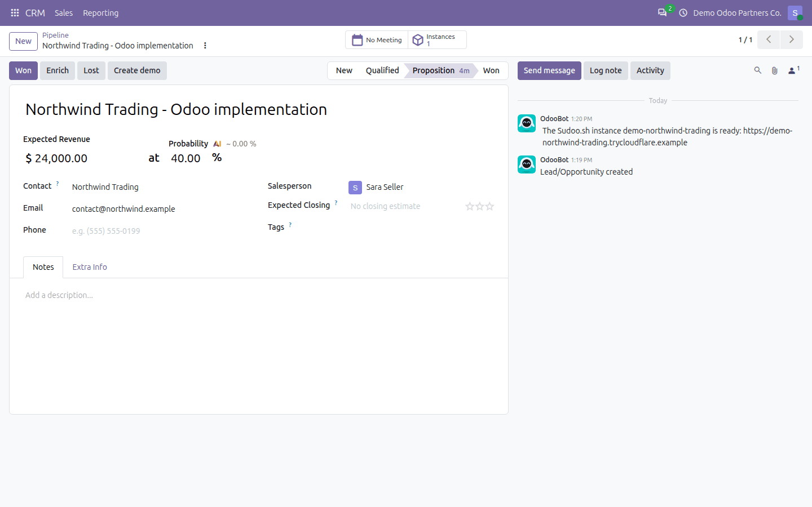

Sudoo.sh for Odoo
A live Odoo demo for every prospect, created from the opportunity in one click and kept as long as the deal needs it.
Click Create demo on an opportunity: the wizard starts with a name taken from the customer and demo data switched on. When the demo is ready, its link is posted on the opportunity, so the whole team sees it and can send it to the prospect.
On every opportunity, for Sudoo.sh users.
Named after the customer, plain Odoo with demo data, your default lifetime.
An Instances smart button lists the demos made for the opportunity.

Two access levels. Sudoo.sh / User sees the company's instances and creates, starts, pauses, restarts and backs them up within the limits the administrator set. Sudoo.sh / Administrator also connects panels, decides what users may create, extends lifetimes and deletes instances.
The button is shown to Sudoo.sh users only; the same limits apply as in the Instance Manager.
Yes. These apps manage the instances of a Sudoo.sh panel, the self-hosted server that runs your Odoo demo, test and training instances. Connect it once under Sudoo.sh, Configuration, Panels.
Yes, free to use, also in companies. It is proprietary software of Sudoo.sh: you may extend it with your own modules, but not publish or sell copies.
This app installs the Instance Manager. Add the others your teams use.
Write to support@sudoo.sh. We answer every message.
Proprietary software of Sudoo.sh, free to use (Odoo Proprietary License v1.0). Odoo is a trademark of Odoo S.A.; Sudoo.sh is not affiliated with Odoo S.A.